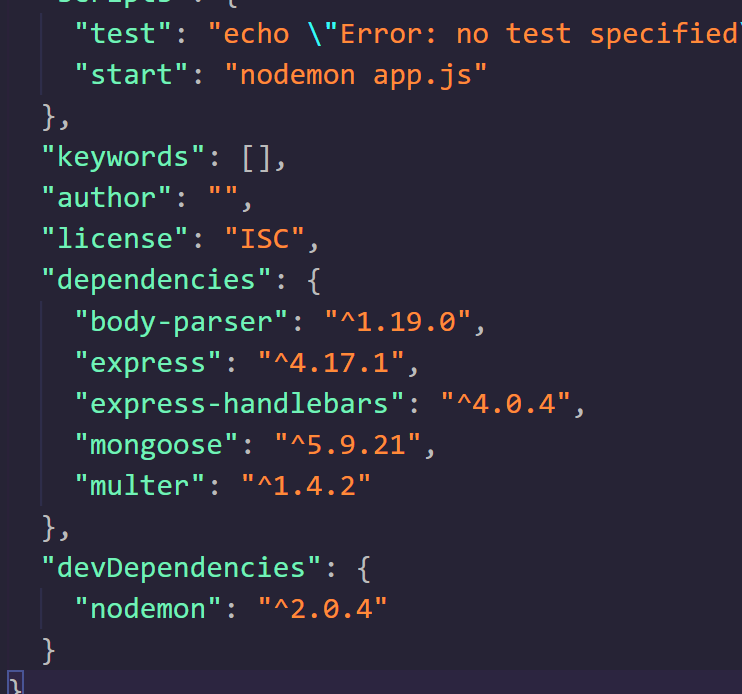

Best Online Computer Science Tool For Coding!


- W3Schools -
The Largest Web Developer Site on The Internet.
3 Billion Pages Displayed Each Year.
60 Million Visitors Each Month.
W3Schools creates simplified and interactive learning experiences. W3Schools is a school for web developers, covering all the aspects of web development:
- HTML
- CSS
- Javascript
- AND Much More...
W3Schools is focused more on web development but offers many other languages for individuals to learn.
Web devlopment languages is a great starter language for somone to learn. Learning some HTML, CSS, and Python before college can help you learn other languages easier while in college.
Click the quote from W3Schools below to visit their website.